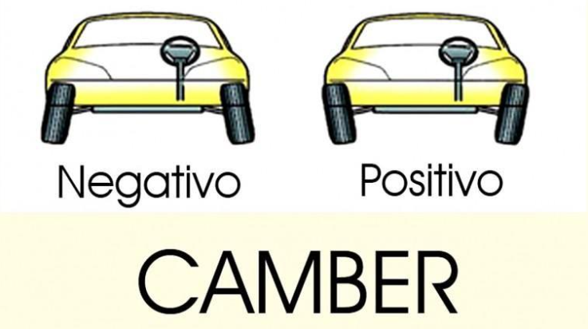
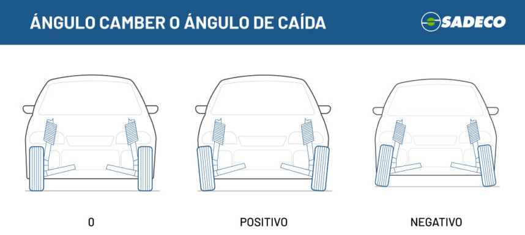

Caída o camber
La caída, conocida también como camber, es uno de los principales ángulos de la geometría de suspensión y dirección de un vehículo. Este ángulo representa la inclinación de la rueda respecto a la vertical del vehículo, observándola desde la parte delantera o trasera.

Dependiendo de la inclinación de la rueda, la caída puede clasificarse en:
- Caída positiva: la parte superior de la rueda se inclina hacia afuera del vehículo.
- Caída negativa: la parte superior de la rueda se inclina hacia adentro del vehículo.
- Caída cero o neutra: la rueda permanece completamente vertical respecto al suelo.
Función de la caída
La caída tiene como función principal optimizar el contacto del neumático con la carretera. Gracias a este ángulo, se mejora la estabilidad, el agarre y el comportamiento del vehículo en diferentes condiciones de conducción.
Durante las curvas, la suspensión y el balanceo del vehículo modifican la posición de las ruedas. Un ajuste correcto del camber permite que el neumático mantenga la mayor superficie posible en contacto con el suelo, aumentando la adherencia y mejorando la seguridad.
Caída negativa
La caída negativa es la más utilizada en vehículos modernos y deportivos.
Sus ventajas son:
- Mejor agarre en curvas.
- Mayor estabilidad lateral.
- Mejor respuesta de dirección.
- Mayor control a velocidades altas.
Esto ocurre porque, al tomar una curva, el neumático exterior se apoya de manera más uniforme sobre el asfalto.
Sin embargo, un exceso de caída negativa puede provocar:
- Desgaste acelerado en la parte interior del neumático.
- Menor estabilidad en línea recta.
- Reducción de la vida útil de las ruedas.
Caída positiva
La caída positiva era más común en vehículos antiguos y algunos vehículos pesados.
Sus efectos principales son:
- Dirección más ligera.
- Mayor estabilidad sobre terrenos irregulares.
- Menor esfuerzo de giro en algunos sistemas antiguos de suspensión.
No obstante, demasiada caída positiva puede reducir el agarre en curvas y provocar desgaste en la parte exterior del neumático.
Caída neutra o cero
Cuando la rueda está completamente vertical, se habla de caída neutra.
Este ajuste busca:
- Un desgaste uniforme del neumático.
- Buen equilibrio entre estabilidad y confort.
- Comportamiento estable en conducción normal.
Muchos vehículos utilizan valores muy cercanos a cero para priorizar comodidad y duración de neumáticos.
Problemas por una caída incorrecta
Si el ángulo de caída está desajustado debido a golpes, desgaste de suspensión o mala alineación, pueden aparecer varios problemas:
- Desgaste irregular de los neumáticos.
- Pérdida de estabilidad.
- Vibraciones o tirones en la dirección.
- Menor adherencia en curvas.
- Incremento del consumo de neumáticos.
Por ello, la caída es uno de los parámetros que se revisan durante la alineación de la dirección y la geometría del vehículo, ya que influye directamente en la seguridad, el rendimiento y el confort de conducción.
